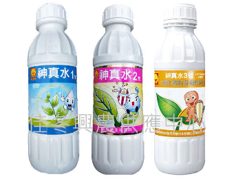

Dec 20 2020 鹿角秘境編輯部撰寫
粉蝨也時不時的出現危害鹿角蕨。該蟲體型微小，不易發現，主要在鹿角蕨葉背刺吸汁液，使得植物養分丟失，而出現枯萎的現象，同時誘發煙煤病，莖葉上會有大片難看的黑粉，直接影響植株的觀賞價值。
發現上述病症時，及時將病葉摘除燒毀，以減少病源，之後定期噴灑50%的多菌靈可濕性粉劑600倍液，每半月一次，連續3次至4次，效果極佳，或是神真水1號，利用放線菌二次代謝物中的幾丁質分解酶破壞立枯絲核菌的細胞壁，使該病菌死亡。稀釋300倍葉噴或灌土。
>
多菌靈多菌靈（Carbendazim）是一種廣泛使用的廣譜苯並咪唑類殺菌劑，也是苯菌靈的代謝產物。它常用於為穀物或水果殺菌，但在部份國家，這種除菌劑只可用於球場或康樂設施，而不能用於農產品。 |
|  |
神真水1號主要成分是放線菌的代謝物，主要的抗生物質是治黴色基素(Fungichromin)是屬於鏈黴菌菌屬的一種抗生素，經實驗測試可以抑制晚疫病和立枯絲核菌的生長， 原理是該類抗生素可以跟真菌細胞膜上的類固醇結合而破壞細胞的功能。裡面成分還有添加枯草桿菌，所以同時也含有微生物肥料的功效，幫助植物根系發展和誘導植物產生抗病性的效果。 |